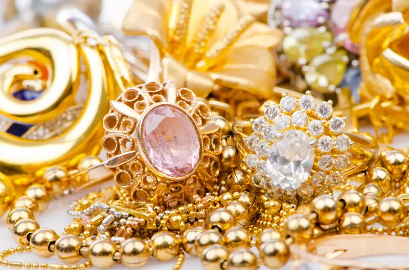
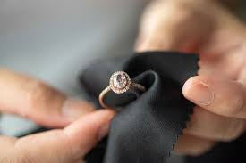
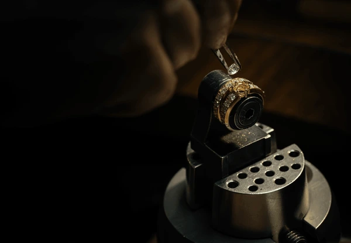

Enchanted Solstice Released!
A breathtaking fusion of nature's beauty and timeless elegance. This exquisite piece, crafted from shimmering silver and rose gold, features delicate engravings of blooming flowers and winding vines, symbolizing growth, renewal, and the ever-changing seasons. At its heart lies a mesmerizing sunstone, a gem that captures the fiery warmth of the sun's embrace. With colors that dance between rich gold and deep amber, this stone reflects the sun's journey across the sky, bringing a radiant glow to any occasion. Encircling it, a constellation of moonstones and peridots sparkles like dew-kissed leaves, adding a touch of magic that evokes the moon's gentle glow. More than just a ring, the Enchanted Solstice is a wearable talisman—a celebration of life, balance, and the enduring cycles of nature. Whether you're marking a special moment or embracing your inner light, let the Enchanted Solstice illuminate your path with its timeless charm and mystical allure. Embrace the magic today and carry the spirit of the solstice with you always!
Collections
Discover our curated collections, where timeless elegance meets modern sophistication. Explore our range of engagement rings, everyday essentials, vintage treasures, and custom designs crafted to suit every occasion and personal style.
Jewelry Care & Guide
Keep your jewelry sparkling and beautiful with our expert care tips and guides. Learn how to clean, store, and maintain your pieces, and gain insights into gemstones, metals, and the latest trends to make informed choices and keep your treasures in top condition.
About Us & Craftsmanship
Uncover the story behind our brand and the passion that drives our designs. From our commitment to quality and ethical sourcing to the meticulous craftsmanship behind each piece, learn what makes our jewelry unique and how we bring beauty and excellence to every creation.